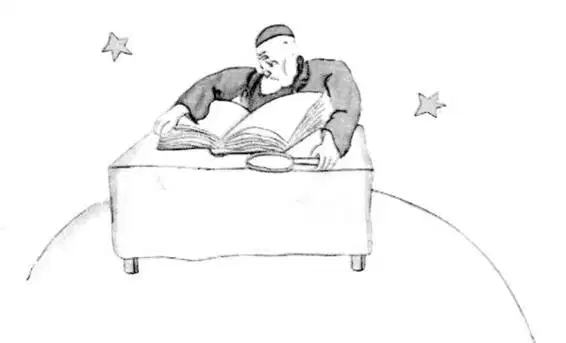
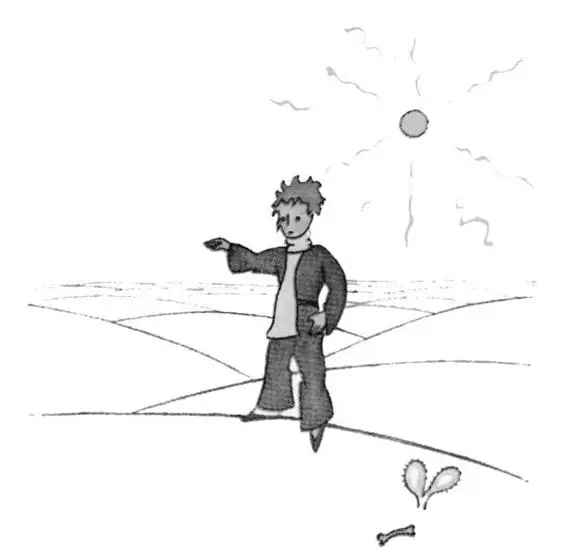

CHAPTER 15
第十五章

—the little prince visits the geographer
——小王子拜访地理学家
The sixth planet was ten times larger than the last one. It was inhabited by an old gentleman who wrote voluminous books.
第六个星球比前一个大十倍。上面住着一个老先生，他写了很多很多的书。
"Oh, look! Here is an explorer!" he exclaimed to himself when he saw the little prince coming.
“噢，瞧！来了一个探险家啊！”他看到小王子走来，便大声对自言自语道。
The little prince sat down on the table and panted a little. He had already traveled so much and so far!
小王子在桌旁坐下来，轻轻地喘着气。他已经走了很多路，来到很远的地方了！
"Where do you come from?" the old gentleman said to him.
“你从哪里来？”老先生问他。
"What is that big book?" said the little prince. "What are you doing?"
“那本大书是关于什么的啊？”小王子问，“你是干什么的呢？”
"I am a geographer," the old gentleman said to him.
“我是地理学家。”老先生告诉他说。
"What is a geographer?" asked the little prince.
“什么是地理学家啊？”小王子问。
"A geographer is a scholar who knows the location of all the seas, rivers, towns, mountains, and deserts."
“地理学家就是一个知道所有海洋、河流、乡镇、山川、沙漠的位置的学者。”
"That is very interesting," said the little prince. "Here at last is a man who has a real profession!" And he cast a look around him at the planet of the geographer. It was the most magnificent and stately planet that he had ever seen.
“真有趣，”小王子说，“这里终于有一位拥有真正职业的人了！”然后，他四下里瞅了瞅这个地理学家的星球。他从未见过这样壮观的星球。
"Your planet is very beautiful," he said. "Has it any oceans?"
“你的星球非常美，”他说，“这里有海洋吗？”
"I couldn't tell you," said the geographer.
“我没法告诉你。”地理学家说。
"Ah!" The little prince was disappointed. "Has it any mountains?"
“啊！”小王子很失望。“它有山川吗？”
"I couldn't tell you," said the geographer.
“我没法告诉你。”地理学家又说。
"And towns, and rivers, and deserts?"
“有乡镇，有河流，有沙漠吗？”
"I couldn't tell you that, either."
“我还是没法告诉你。”
"But you are a geographer!"
“可你是一个地理学家啊！”
"Exactly," the geographer said. "But I am not an explorer. I haven't a single explorer on my planet. It is not the geographer who goes out to count the towns, the rivers, the mountains, the seas, the oceans, and the deserts. The geographer is much too important to go loafing about. He does not leave his desk. But he receives the explorers in his study. He asks them questions, and he notes down what they recall of their travels. And if the recollections of any one among them seem interesting to him, the geographer orders an inquiry into that explorer's moral character."
“没错，”地理学家说，“可我不是探险家。我的星球上一个探险家也没有。地理学家是不会去计算乡镇、河流、山川、海洋和沙漠的数量的。地理学家太重要了，不会去闲逛的。他不能离开他的桌子。但是，他会在书房接待探险家。他问他们问题，然后记下探险家关于旅行的回忆。如果其中一个探险家的回忆让他很感兴趣，地理学家就会展开对这个探险家品行的调查。”
"Why is that?"
“那是为什么呢？”
"Because an explorer who told lies would bring disaster on the books of the geographer. So would an explorer who drank too much."
“因为说谎的探险家会给地理学家的书带来灾难。喝太多酒的探险家也是如此。”
"Why is that?" asked the little prince.
“为什么呢？”小王子问。
"Because intoxicated men see double. Then the geographer would note down two mountains in a place where there was only one."
“因为喝醉了的人会把一个东西看成两个。那么地理学家就会在一个本来只有一座山脉的地方记上两座。”
"I know some one," said the little prince, "who would make a bad explorer."
“我认识一个人，”小王子说，“他会成为一个差劲的探险家。”
"That is possible. Then, when the moral character of the explorer is shown to be good, an inquiry is ordered into his discovery."
“那很可能。然后，当一个探险家的品行被证明是好的以后，就会对他的发现展开调查。”
"One goes to see it?"
“有人会去调查这个发现吗？”
"No. That would be too complicated. But one requires the explorer to furnish proofs. For example, if the discovery in question is that of a large mountain, one requires that large stones be brought back from it."
“不会。那太复杂了。但会要求探险家拿出证据。比如，正在调查的发现若是一座大山，那么就要求探险家把山上的大石头带回来。”
The geographer was suddenly stirred to excitement.
地理学家突然兴奋不已。
"But you—you come from far away! You are an explorer! You shall describe your planet to me!”
“而你——你就是从很远的地方来的嘛！你是一个探险家啊！向我描述一下你的星球吧！”
And, having opened his big register, the geographer sharpened his pencil. The recitals of explorers are put down first in pencil. One waits until the explorer has furnished proofs, before putting them down in ink.
于是地理学家打开了他那本大大的登记簿，开始削起了铅笔。起初，探险家们的叙述是用铅笔记下来的。等到他们提供证据以后，就会用墨水记载下来。
"Well?" said the geographer expectantly.
“怎么样？”地理学家满怀期待地问道。
"Oh, where I live," said the little prince, "it is not very interesting. It is all so small. I have three volcanoes. Two volcanoes are active and the other is extinct. But one never knows."
“哦，我住的地方，”小王子说，“并不怎么有趣。那里非常小。我有三座火山。两座活的，一座死的。可谁也说不准。”
"One never knows," said the geographer.
“谁也说不准。”地理学家说。
"I have also a flower."
“我还有一朵花。”
"We do not record flowers," said the geographer.
“我们不记载花。”地理学家说道。
"Why is that? The flower is the most beautiful thing on my planet!"
“为什么不呢？这朵花是我的星球上最美丽的东西！”
"We do not record them," said the geographer, "because they are ephemeral."
“我们不将花记录下来，”地理学家说，“因为它们太短暂了。”
"What does that mean—'ephemeral'?"
“短暂——什么意思？”
"Geographies," said the geographer, "are the books which, of all books, are most concerned with matters of consequence. They never become old-fashioned. It is very rarely that a mountain changes its position. It is very rarely that an ocean empties itself of its waters. We write of eternal things.”
地理学家说：“地理是所有书籍当中最注重大事件的书。它们从来不会过时。山脉几乎不会改变位置。海洋也很少会干涸。我们记载永恒的东西。”
"But extinct volcanoes may come to life again," the little prince interrupted. "What does that mean—'ephemeral'?"
“可是死火山都可能再次复活。”小王子打断他说道，“短暂——什么意思？”
"Whether volcanoes are extinct or alive, it comes to the same thing for us," said the geographer. "The thing that matters to us is the mountain. It does not change."
“不论火山是死是活，对我们来说都一样。”地理学家说，“对我们而言，重要的是山脉。它不会改变。”
"But what does that mean—'ephemeral'?" repeated the little prince, who never in his life had let go of a question, once he had asked it.
“可是‘短暂’是什么意思啊？”小王子重复问道，他从不放过他问过的问题。
"It means, 'which is in danger of speedy disappearance.'"
“意思就是‘有可能很快消逝的物体。’”
"Is my flower in danger of speedy disappearance?"
“我的花会有可能很快消逝吗？”
"Certainly it is."
“当然了。”
"My flower is ephemeral," the little prince said to himself, "and she has only four thorns to defend herself against the world. And I have left her on my planet, all alone!"
“我的花是短暂的，”小王子自言自语地说，“她只有四根刺来抵御外界的侵害，保护她自己。可我却把她留在了我的星球上，让她孤零零地！”
That was his first moment of regret. But he took courage once more.
他第一次感到后悔。不过他又再次鼓足了勇气。
"What place would you advise me to visit now?" he asked.
“现在我去什么地方好呢，能给点建议吗？”他问道。
"The planet Earth," replied the geographer. "It has a good reputation."
“去地球吧。”地理学家回答说。“地球很出名呢。”
And the little prince went away, thinking of his flower.
于是小王子离开了，心里想着他的花儿。
